Mach-O 加载时的动态链接
Mach-O 文件结构详解中分析了 Mach-O 的构成，介绍了部分
Segment和Section的结构和其作用，相当于是静态分析。这篇文章将分析 Mach-O 加载时动态链接过程，加深自己的理解。
启动过程
iOS App 的启动过程大概分为这几个步骤：
- 内核初始化部分，负责将 App 的 Mach-O Header 映射到内存中进行处理然后调用
dyld dyld负责将 App 处理为一个可以运行的状态，通过添加DYLD_PRINT_STATISTICS环境变量可以查看各个阶段，包括：- 加载 Mach-O 的依赖库。所依赖的库信息在 Mach-O 的
Load Commands中可以看到 - Fix-ups，地址修正。当所依赖的动态链接库加载完成后，它们彼此间独立，该阶段负责将它们绑定起来。其中 Fix-ups 包括两部分：
Rebasing：将 App 可行文件中指向内部的指针进行指向修正Binding：修复 App 可执行文件中指向外部的指针
- ObjC 环境配置。该阶段进行
Class、Category的注册和SEL的分配。 - initializer 。
+load在该阶段执行
- 加载 Mach-O 的依赖库。所依赖的库信息在 Mach-O 的
- 进入
main()和UIApplicationDelegate回调状态执行阶段，展示自定义 UI
符号绑定（Binding）
Mach-O 加载时，符号分成了懒加载符号和非懒加载符号，非懒加载符号在 dyld 加载 Mach-O 时就会绑定真实地址；对于来自于系统动态链接库或者独立于 Main Execute Binary（Mach-O） 之外的懒加载符号，只在在它们第一次被调用时才会绑定真实地址，后续调用时将直接使用真实地址。
Demo 二进制 HelloWorld 中调用了来自于系统动态库的 NSLog，下面将通过该二进制及其源码来分析符号的绑定过程。
下面会先使用 MachOView 静态查看相关的 Section 和 Segment 静态分析，然后单步动态调试验证。
1. __TEXT,__stubs
__TEXT 段存放的是代码指令，其中 __TEXT,__stubs 存放的是当前 Image（镜像） 外部符号的桩点。下图是 HelloWorld 的 __TEXT,__stubs 部分：
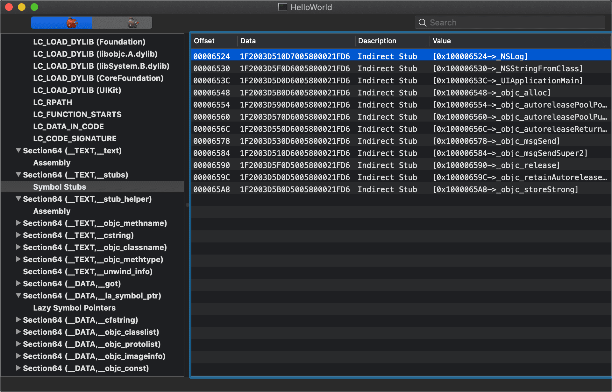
其中 Data 字段是机器码，可以按照 AArch64 指令集的编码规则[1]翻译成汇编代码，使用 Hopper Disassembler 打开二进制（注意不要勾选 Mach-O AArch64 Options 的 Resolve Lazy Bindings 选项），定位到 NSLog：
Hopper 右边 Instruction Encoding 区域的 16 进制串对应当前选中的汇编命令，三条命令组合起来的 16 进制串 1F2003D510D7005800021FD6 刚好就是 MachOView 中 NSLog 的 Data 值。这三行指令让跳转到 0x100008008 去执行，0x100008008 减去 VM((LC_SEGMENT_64),__PAGEZERO.VMSize) 的初始偏移值：0x100000000(4294967296) ，得到 0x000008008，它对应 Mach-O 中 __DATA.__la_symbol_ptr 的起始位置。
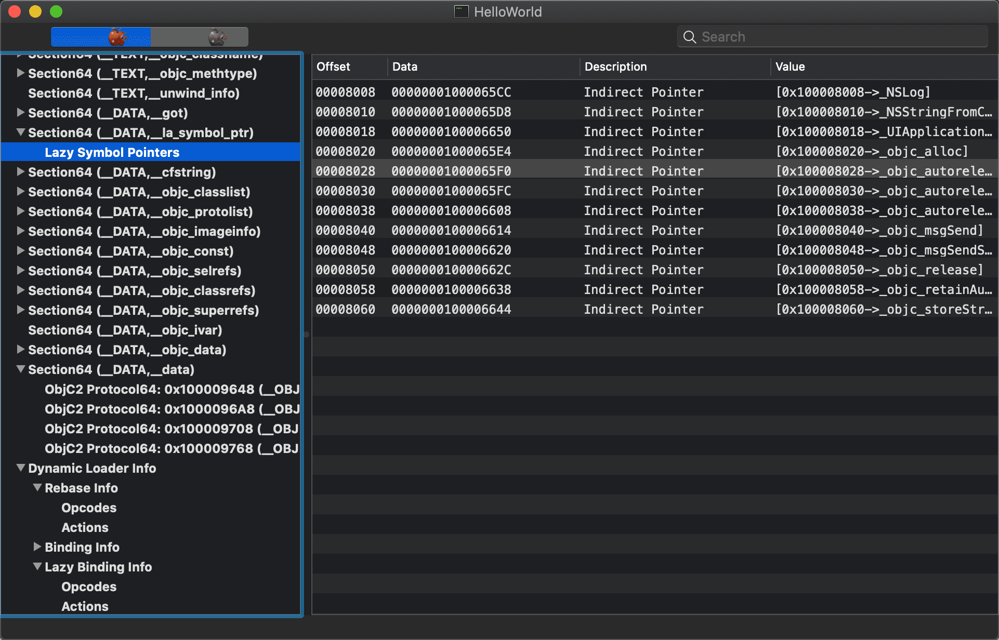
由于 __TEXT 是只读的，为了能够在 Mach-O 经过了 ASLR 和 PIE 后仍然能够正确地定位外部符号的地址，完成动态链接，__TEXT,__stubs 充当了跳板作用，当有人要调用 stub 符号时，它便将调用流程转向了一个可写区域 __DATA.__la_symbol_ptr，而该区域将存放真正的符号地址
2. __DATA.__la_symbol_ptr
__la_symbol_ptr 存放 lazy-binding 的函数指针信息，在 Hopper 中双击 NSLog 的地址 0x100008008，将会跳转到：
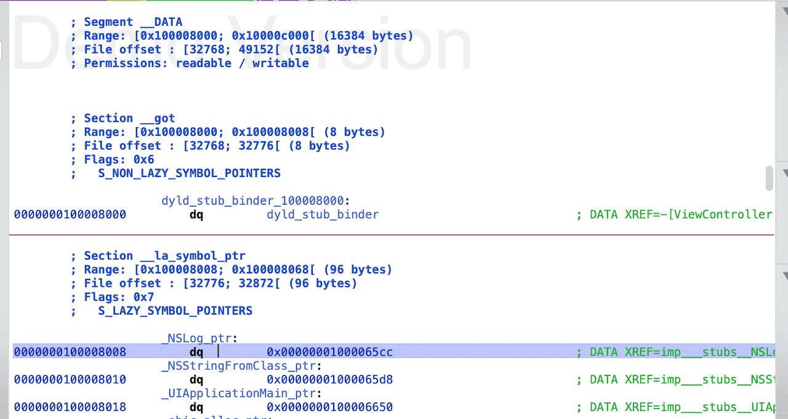
是一个交叉引用地址，指向 0x00000001000065cc，而该地址落在 __TEXT.__stub_helper 中，且该处的 Data 为 50000018：
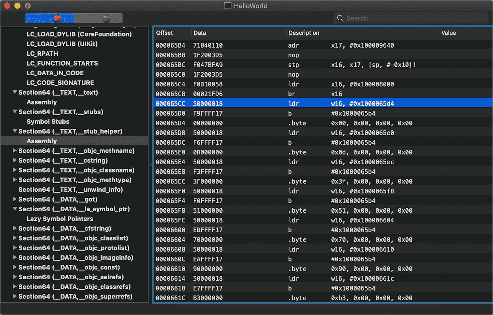
对应的汇编代码会将流程转向 __TEXT.__stub_helper 的头部
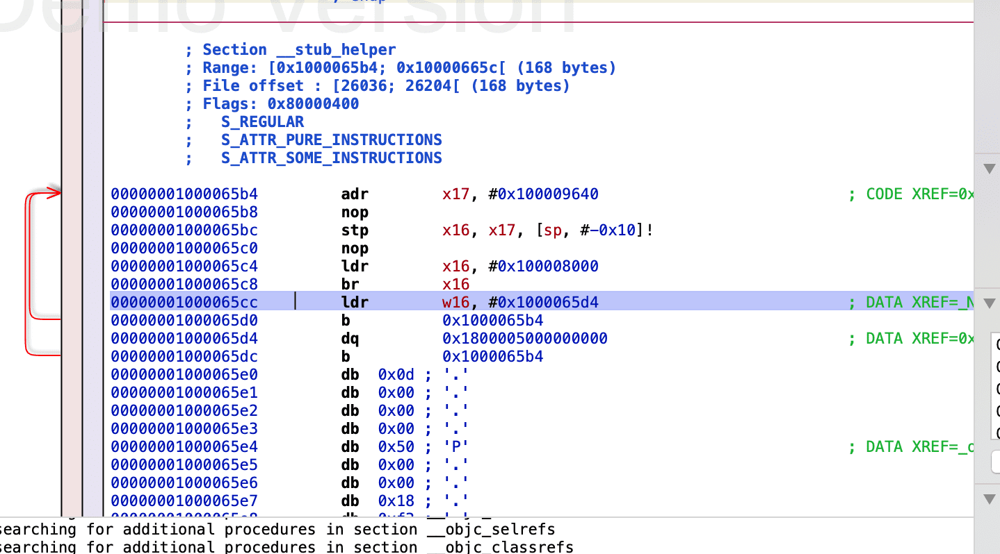
3. __TEXT.__stub_helper
__TEXT.__stub_helper 区域是一段汇编代码，这段代码不仅会找到要调用符号真正的地址并跳转到地址执行，而且会将该地址写回对应的 __DATA.__la_symbol_ptr，实现“缓存”。
NSLog 的绑定过程
- 新建一个 demo ，主要代码如下：在两个
1
2
3
4
5
6- (void)viewDidLoad {
[super viewDidLoad];
// Do any additional setup after loading the view.
NSLog(@"1");
NSLog(@"2");
}NSLog处分别下断点，设置 Debug Workflow 为 Always Show Disassembly，然后选择 arm64 真机运行，如图：
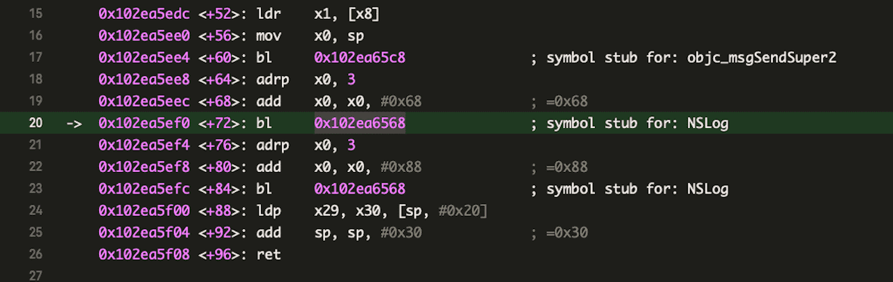
Xcode 提示当前位置为symbol stub for NSLog - 得到 ALSR 偏移：
0x102ea00001
2(lldb) image list HelloWorld
[ 0] 1F21C492-D5E8-3B0B-B239-E0E691E7D64F 0x0000000102ea0000 /Users/chenzheng/Library/Developer/Xcode/DerivedData/MachOExploration-gyejyvbqloguepctiipvnexsjqsv/Build/Products/Debug-iphoneos/HelloWorld.app/HelloWorld 执行 lldb step into 命令
stepi，如下：1
2
3
4HelloWorld`NSLog:
-> 0x102ea6568 <+0>: nop
0x102ea656c <+4>: ldr x16, #0x1a9c ; (void *)0x0000000102ea6610
0x102ea6570 <+8>: br x16按住 Control 键点 Step Over 达到
ldr所在行，该行取 (pc + 0x1a9c) 处的地址（经过计算为0x0000000102ea8008），存入x16，该地址指向__DATA.__la_symbol_ptr中偏移为0x0的位置，由 MachOView 可知该处即是_NSLog的位置，对应，如下图：
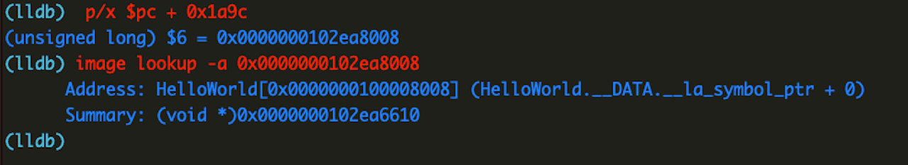真实地址的所在
- 在
0x0000000102ea6610处下断点:br set -a 0x0000000102ea6610，然后继续执行，如下：结合第一行和第三行，1
2
3
4
5
6
7
8-> 0x102ea6610: ldr w16, 0x102ea6618
0x102ea6614: b 0x102ea65f8
0x102ea6618: udf #0x0
0x102ea661c: ldr w16, 0x102ea6624
0x102ea6620: b 0x102ea65f8
0x102ea6624: udf #0xd
0x102ea6628: ldr w16, 0x102ea6630
0x102ea662c: b 0x102ea65f80x102ea6610处的ldr指令实际是取文件0x6618处指示的立即数0x00000000存入x16中，这个0x00000000是一个偏移值，描述的是距离Dynamic Loader Info 中 Lazy Binding Info 起始地址的偏移，从下图可以看出，偏移后位置为0x0000c2a8 + 0x00000000
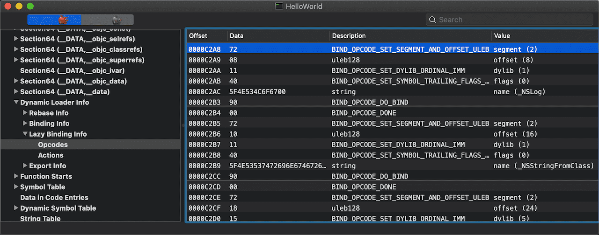
其中dylib(1)表示该符号处于当前文件第三个 LC_LOAD_DYLIB 中，即libSystem.B.dylib中；segment(2) 和 offset(8) 表示将找到的真实地址写入当前文件架构的第 2 个 segment 偏移为 8 的地方。从 MachOView 中可以看到，第二个 segment 即为 __DATA，偏移 8 的位置刚好是_NSLog的符号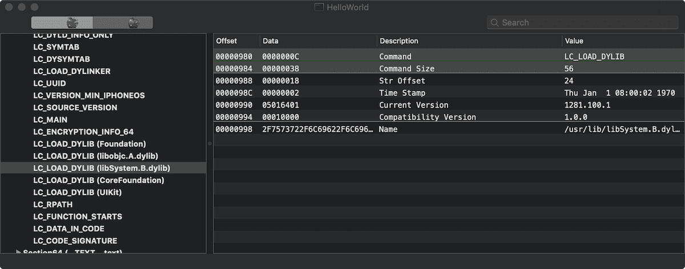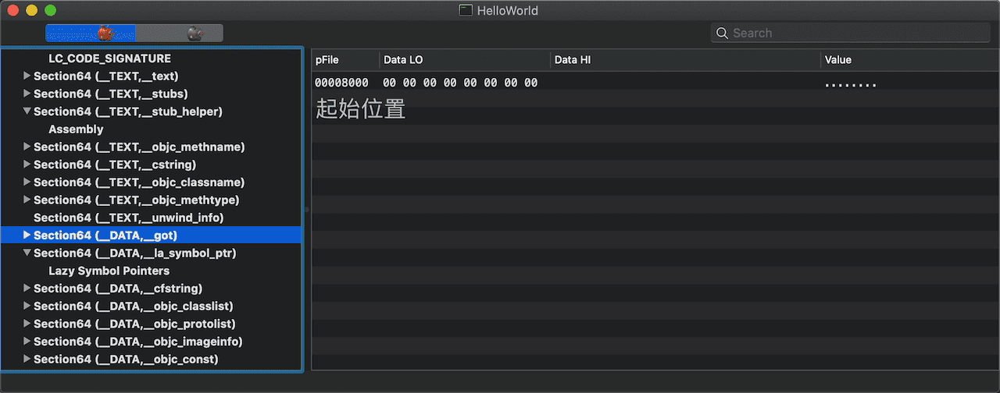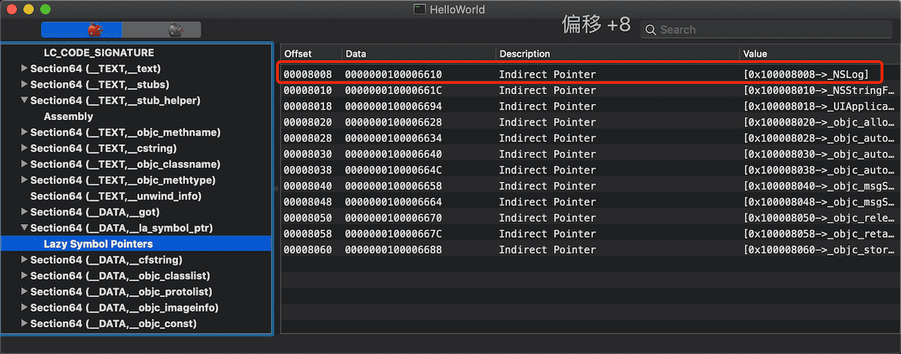
- 在
绑定与执行
设置断点br set -a 0x102ea65f8继续执行，如下：1
2
3
4
5
6
7
80x102ea65f8: adr x17, #0x2fb8 ; _dyld_private
0x102ea65fc: nop
0x102ea6600: stp x16, x17, [sp, #-0x10]!
0x102ea6604: nop
0x102ea6608: ldr x16, #0x19f8 ; (void *)0x00000001b51bc80c: dyld_stub_binder
0x102ea660c: br x16
0x102ea6610: ldr w16, 0x102ea6618
0x102ea6614: b 0x102ea65f8dyld_stub_binder和真实地址查找有关，在此处下断点：br set -a 0x00000001b51bc80c后继续执行，进入到dyld内部，单步执行到_dyld_fast_stub_entry所在行，如图：
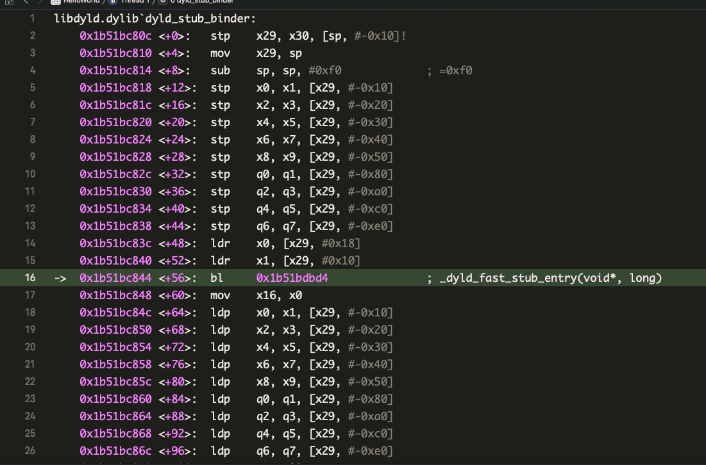在这一行的前两行:
1
20x1b51bc83c <+48>: ldr x0, [x29, #0x18]
0x1b51bc840 <+52>: ldr x1, [x29, #0x10]将
x29分别偏移0x18和0x10处的地址对应的值取出来放到x0、x1，作为参数传给了_dyld_fast_stub_entry，_dyld_fast_stub_entry中将完成符号地址的查找。x1中就是上述提到的偏移量, 而x0是一个_dyld_private指针:1
2
3
4(lldb) register read x1
x1 = 0x0000000000000000
(lldb) register read x0
x0 = 0x0000000102ea95b0 _dyld_private_dyld_fast_stub_entry
这是dyld中的一个函数，我们下载一套和系统中正在使用的dyld最接近的源码，尝试分析其功能。
在 lldb 中执行image list dyld，得到dyld的路径/Users/chenzheng/Library/Developer/Xcode/iOS DeviceSupport/12.4 (16G77)/Symbols/usr/lib/dyld，将其拖入到 MachOView 中，定位到LC_SOURCE_VERSION，看到 Version 为 650.3.4，可惜 dyld 源码页面并没有找到匹配的版本，所以下载了 655 版本。打开 dyld 工程后定位到_dyld_fast_stub_entry:好奇一下1
2
3
4
5
6
7
8
9
10
11
12
13
14
15#if __i386__ || __x86_64__ || __arm__ || __arm64__
__attribute__((visibility("hidden")))
void* _dyld_fast_stub_entry(void* loadercache, long lazyinfo)
{
DYLD_NO_LOCK_THIS_BLOCK;
static void* (*p)(void*, long) = NULL;
if(p == NULL)
// 如果缓存位置为空，从全局的 `函数名-函数指针` 数组中找到对应的
// 函数指针 ((void*)dyld::fastBindLazySymbol)，然后将形参透传过去并执行
// 然后返回执行的结果，此结果应该就是符号对应的真实地址
_dyld_func_lookup("__dyld_fast_stub_entry", (void**)&p);
return p(loadercache, lazyinfo);
}
#endifdyld::fastBindLazySymbol的实现：大致是根据传入的1
2
3
4
5
6
7
8
9
10
11
12
13
14
15
16
17
18
19
20
21
22
23
24
25
26
27
28
29
30
31
32
33
34
35
36
37
38
39
40
41
42
43
44
45
46
47
48uintptr_t fastBindLazySymbol(ImageLoader** imageLoaderCache, \
uintptr_t lazyBindingInfoOffset)
{
uintptr_t result = 0;
// get image
if ( *imageLoaderCache == NULL ) {
// save in cache
*imageLoaderCache = dyld::findMappedRange((uintptr_t)imageLoaderCache);
if ( *imageLoaderCache == NULL ) {
#if SUPPORT_ACCELERATE_TABLES
if ( sAllCacheImagesProxy != NULL ) {
const mach_header* mh;
const char* path;
unsigned index;
if ( sAllCacheImagesProxy->addressInCache(imageLoaderCache, &mh, \
&path, &index) ) {
result = sAllCacheImagesProxy->bindLazy(lazyBindingInfoOffset, \
gLinkContext, mh, index);
if ( result == 0 ) {
halt("dyld: lazy symbol binding failed for image in dyld shared\n");
}
return result;
}
}
#endif
const char* message = "fast lazy binding from unknown image";
dyld::log("dyld: %s\n", message);
halt(message);
}
}
// bind lazy pointer and return it
try {
result = (*imageLoaderCache)->doBindFastLazySymbol( \
(uint32_t)lazyBindingInfoOffset, gLinkContext, \
(dyld::gLibSystemHelpers != NULL) ? \
dyld::gLibSystemHelpers->acquireGlobalDyldLock : NULL,
(dyld::gLibSystemHelpers != NULL) ? \
dyld::gLibSystemHelpers->releaseGlobalDyldLock : NULL);
}
catch (const char* message) {
dyld::log("dyld: lazy symbol binding failed: %s\n", message);
halt(message);
}
// return target address to glue which jumps to it with real parameters restored
return result;
}lazyBindingInfoOffset和gLinkContext找到真实的地址，然后返回。再单步一次执行完
_dyld_fast_stub_entry，得到其返回值（存在在x0中），打印 x0 ，得到的0x00000001b61d7620正是NSLog在 Foundation 框架中的地址：
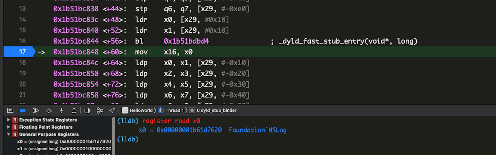第二次执行
单步执行，应该会停在第二个NSLog的地方：
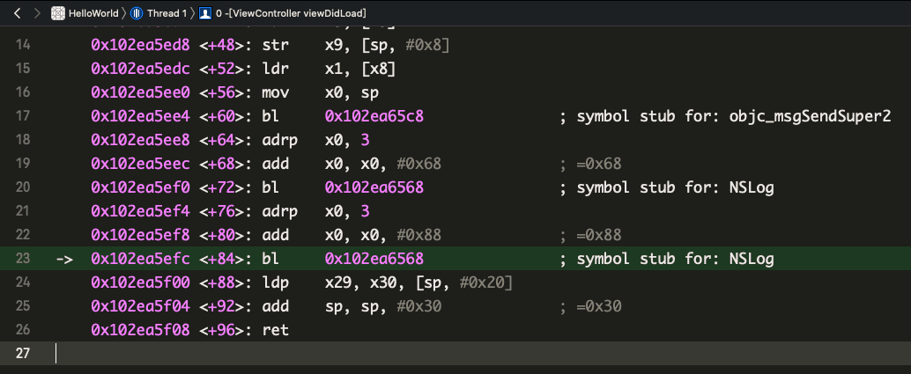
设置断点br set -a 0x102ea6568，然后执行，在断点位置已经有提示，存入x16的地址已经是上述NSLog的地址0x00000001b61d7620，经过验证，__DATA.__la_symbol_ptr偏移0x00处的值已经被赋值为了0x00000001b61d7620
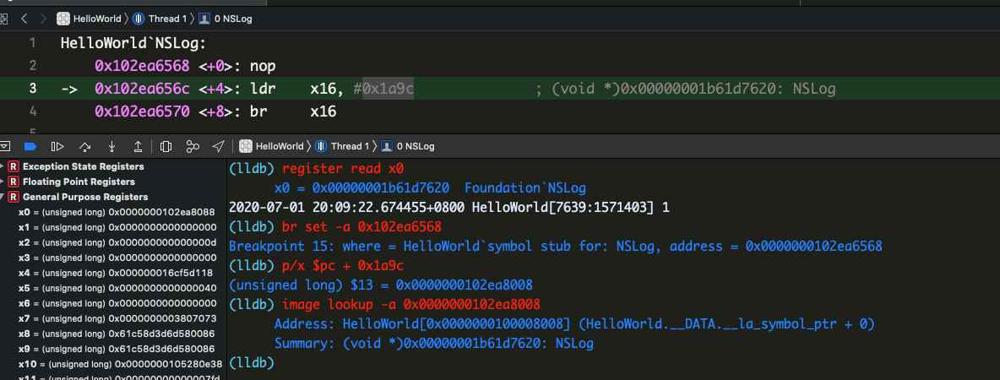
dyld_stub_binder？
__TEXT.__stub_helper 中本是用来帮助处理符号的延迟绑定的一段代码，里面引用了同样不在当前 Mach-O 中的符号 dyld_stub_binder，好像有问题🤔
其实 dyld_stub_binder 存在于 __DATA.__got 区域，是非延迟绑定的符号，它在 Mach-O 加载完成后立即可用，可以用来辅助定位延迟绑定符号的地址。
流程总结
上述 viewDidLoad 对应的汇编代码:
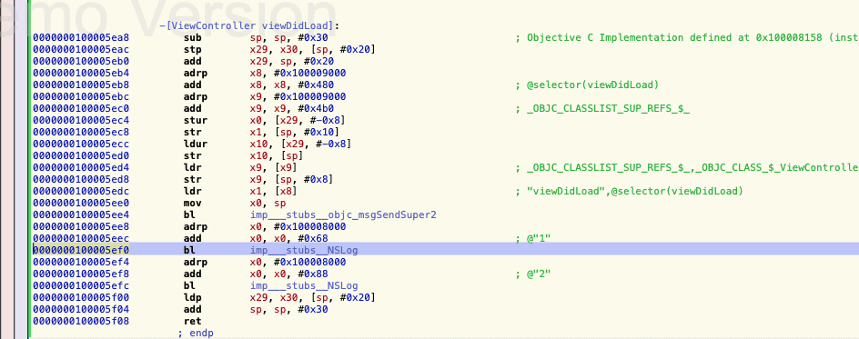
第一次 bl imp_stubs_NSLog 时将跳转到 NSLog 的桩点，这一段汇编代码将从 __DATA.__la_symbol_ptr 中读取地址并跳转执行，而 __DATA.__la_symbol_ptr 中此时的地址指向 __TEXT.__stub_helper 并最终被引导到 __TEXT.__stub_helper 的头部执行；在 __TEXT.__stub_helper 中调用非延迟绑定的 dyld_stub_binder ，在其中通过 _dyld_fast_stub_entry 拿到真实的地址，调用 _dyld_fast_stub_entry 时传入了从 Dynamic Loader Info 中取到的当前待绑定符号的 Lazy Binding Info ，以便在找到真实地址后能够写回 __DATA.__la_symbol_ptr 中，下次 bl imp_stubs_NSLog 时将直接调用
延迟绑定技术很好地处理好了代码复用和使用效率问题，整个过程只有在自己亲自动手跟进一番才会有深刻的理解
本博客所有文章除特别声明外，均采用 CC BY-SA 4.0 协议 ，转载请注明出处！